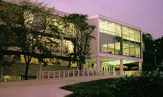

Bibliography of Research Influencing
eERL
Development and Evaluation

Aladwani, Adel M. and Prashant C. Palvia. 2002. "Developing and
Validating an Instrument for Measuring User-Perceived Web Quality."
Information & Management. Vol. 39. No. 6. p. 467-476.
Bishop, Ann Peterson and Bertram (Chip) Bruce. 2002. "Digital Library
Evaluation as Participative Inquiry." Graduate School of Library and
Information Science. University of Illinois. - website
http://alexia.lis.uiuc.edu/~chip/pubs/02delos.pdf
Bishop, Ann Peterson. 1998. "Measuring Access, Use, and Success in
Digital Libraries" The Journal of Electronic Publishing. Vol. 4, no. 2.
Online copy at
http://www.press.umich.edu/jep/04-02/bishop.html
Blanford, Ann, Bob Fields, and Suzette Keith. 2003. "Usability
Evaluation of Digital Libraries." JCDL 2003 - Joint Conference on
Digital Libraries - May 27, 2003, Houston.
Chao, Hungyune. 2002. "Assessing the Quality of Academic Libraries on
the Web: The Development and Testing of Criteria." Library &
Information Science Research. Vol. 24 p. 169-94.
Cooper, Alan. 1999. The Inmates Are Running the Asylum: Why High-Tech
Products Drive Us Crazy and How to Restore the Sanity. Indianapolis, Ind.
Sams.
Covey, Denise Toll. 2002. Usage and Usability Assessment: Library
Practices and Concerns. Washington: Digital Library Federation, Council
on Library and Information Resources. … Online copy at
http://www.ffzg.hr/infoz/lida/lida2000/asis_2000_text3.doc
Heath, Fred, Martha Kyrillidou, Duane Webster, Sayeed Choudhury, Ben
Hobbs, Mark Lorie and Nicholas Flores. 2003. "Emerging Tools for
Evaluating Digital Library Services: Conceptual Adaptations of LibQUAL+
and CAPM." JoDI: Journal of Digital Information. Vol. 4, No. 2.
...go to
http://jodi.ecs.soton.ac.uk/Articles/v04/i02/Heath/
Hill, Linda L., Ron Dolin, James Frew, Randall B. Kemp, Mary Larsgaard,
Daniel R. Montello, Mary-Anna Rae, and Jason Simpson. 1997. "User
Evaluation: Summary of the Methodologies and Results for the Alexandria
Digital Library, University of California at Santa Barbara." in ASIS97
Digital Collections: Implications for Users, Funders, Developers and
Maintainers - Proceedings of the 60th ASIS Annual Meeting. Vol. 34. p.
225-243.
Kilker, Julian and Geri Gay. 1998. "The Social Construction of a
Digital Library: A Case Study Examining Implications for Evaluation."
Information Technology and Libraries. Vol. 17, No. 2. p. 60-70.
Leazer, Gregory H., Anne J. Gilliland-Swetland, and Christine L.
Borgman. 2000. "Evaluating the Use of a Geographic Digital Library in
Undergaduate Clssrooms: ADEPT." International Conference on Digital
Proceedings of the Fifth ACM Conference on Digital Libraries Table of
Contents. San Antonio, Texas.
Manduca, C.A., McMartin, F.P. and Mogk, D.W. 2001. Pathways to
Progress: Vision and Plans for Developing the NSDL, National Science,
Mathematics, Engineering, and Technology (SMET) Education Digital
Library (NSDL)." -
http://nsdl.comm.nsdlib.org/Comm.Center_Archive/workgroups/
whitepaper.pdf. Evaluation discussed on p. 20-21.
Marchionini, Gary, Catherine Plaisant, and Anita Komlodi. 1999. "The
People in Digital Libraries: Multifaceted Approaches to Assessing Needs
and Impact." - website
http://www.ils.unc.edu/~march/revision.pdf
Marchionini, Gary and Gregory Crane. 1994. "Evaluating Hypermedia and
Learning: Methods and Results from the Perseus Project." ACM
Transactions on Information Systems. Vol. 12, No. 1. p. 5-34.
Saracevic, Tefko, and Lisa Covi. 2000. "Challenges for Digital Library
Evaluation." in ASIS2000 Knowledge Innovations: Celebrating Our
Heritage, Designing Our Future. - Proceedings of the 63rd Annual
Meeting of the American Society for Information Science. Draft Copy
… Online copy at
http://www.ffzg.hr/infoz/lida/lida2000/asis_2000_text3.doc
Spink, Amanda. 2002. "A User-Centered Approach to Evaluating Human
Interaction with Web Search Engines: An Exploratory Study." Information
Processing and Management. Vol. 38 p. 401-426.
Sumner, Tamara, Melissa Dawe, and Holly Devaul. 2002. "Creating
Reusable Education Components: Lessons from DLESE." Journal of
Geoscience Education. Vol. 50 No. 1 pp. 25-30.
Yang, Shu Ching. 2001. "An Interpretive and Situated Approach to an
Evaluation of Perseus Digital Libraries." Journal of the American
Society for Information Science and Technology. Vol. 52 No. 14 p. 1210-
23.